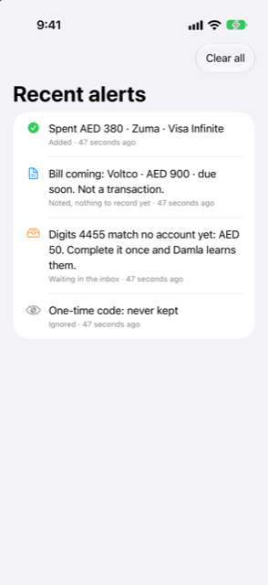

Guide › Automatic capture
What Damla ignores, and undoing an alert
Adverts, limits, reminders and codes are skipped; how to take back a wrong call.
Damla records a bank message only when it says that money actually moved. Adverts, limit notices, reminders and one-time codes are skipped. Anything Damla does act on can be undone from one screen.

When to use it
- A message reached Damla and nothing changed, and you want to know why.
- Damla acted on a message it should not have, and you want to take it back.
- You have just set up a Shortcut and want to see what Damla does with each message.
What Damla skips
Messages like these are never recorded:
- One-time and approval codes ("otp", "verification code", "do not share"): dropped, and the message is not kept — not in your books, not in the log, and never written to disk.
- Adverts and offers: wordings such as "cashback", "offer", "rewards", "congratulations", "apply now", "valid until".
- Limit and rate notices: "limit has been", "limit is set", "limit increased", "interest rate".
- Reminders: wordings such as "reminder", "don't forget", "kindly pay" and "pay by".
- Amounts that have not moved: a number written right after "over", "above", "more than", "exceeding", "up to" or "minimum spend", or a sentence built on "if you" or "you can". That is an offer or a limit, not a charge.
- A transaction that did not happen: declined, unsuccessful, failed, rejected, insufficient.
- Messages with nothing about money, such as a delivery notice: dropped, not kept, not logged.
When a message about money is skipped, it is marked Ignored. The log line carries its first words, never the whole message, so a wrong call can be seen later. Not every skip leaves a line: a message that a Shortcut handed over while your phone was unlocked, and that Damla dropped, is not saved at all. One that arrives while the phone is locked is read when you next open Damla, and that reading is kept.
What is not skipped
A message that says your bill is ready becomes an expected bill, not spending. The card or bank charge that later pays it is the transaction. A card statement notice (a total due together with a minimum due) is read as a statement and waits for you to review it. A reminder for a bill Damla already noted does not add a second one: it refreshes that bill's due date, and the line says Reminder of a bill already noted. Anything unclear waits in the Inbox for one tap. Nothing that creates a commitment is added without you confirming it.
Checking what happened
- Open Settings, tap Bank messages and statements, then Recent alerts.
- Read the list. Each money message shows what was done and why: Added, Waiting in the inbox, Already recorded, Ignored or Noted, nothing to record yet, plus how long ago. The list holds the 50 most recent lines.
- If a money message arrived and nothing is listed, the Shortcut did not run. Check the keyword, that it is set to Run Immediately, and that the text is the blue Shortcut Input pill.
Undoing an alert
- In Recent alerts, swipe right on an alert Damla acted on and tap Undo.
- Confirm. What is undone:
- An alert that was added: the transaction it added is deleted. If that transaction had settled a bill, the bill is owed again. - An alert that was noted: the bill it noted is forgotten.
- The line stays in the list with "Undone" in front, so you can see what happened.
Undo appears only on lines where Damla acted on its own and the action is still in force: a transaction it added that is still in your books, or a bill it noted that is still open. Lines marked Already recorded, Ignored or Waiting in the inbox have nothing to take back.
Swiping the other way offers Delete, which removes only the log line. Clear all empties the list; transactions already added stay.
Good to know
Related
Something unclear or missing? Write to support@raveniq.ai and say which page.